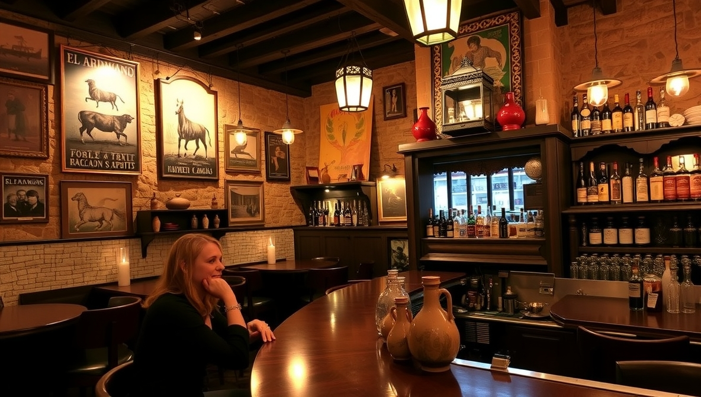
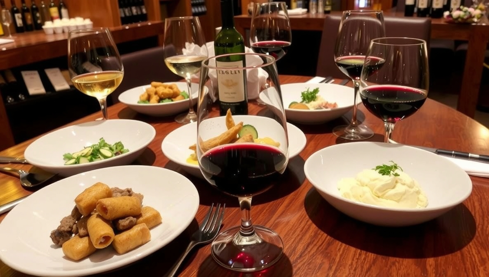

Ubicado en el corazón de Madrid, nuestro establecimiento más antiguo (desde 1995) ofrece una auténtica experiencia castellana con sus paredes de piedra, vigas de madera y decoración tradicional. Un lugar donde el tiempo parece haberse detenido para preservar las verdaderas esencias de la cocina madrileña.
El cocido madrileño, preparado durante 6 horas con los mejores ingredientes, es nuestro plato estrella. También destacan nuestras tapas tradicionales como los callos a la madrileña, las patatas bravas (con nuestra salsa secreta) y las croquetas de jamón ibérico, elaboradas diariamente con jamón de Guijuelo.
Cada viernes y sábado por la noche ofrecemos espectáculos flamencos en un ambiente íntimo. Nuestra bodega alberga más de 150 referencias de vinos, con especial atención a los tintos de Ribera del Duero. El personal, con una media de 10 años en la casa, ofrece un servicio cálido y profesional que hace sentir a los clientes como en casa.
